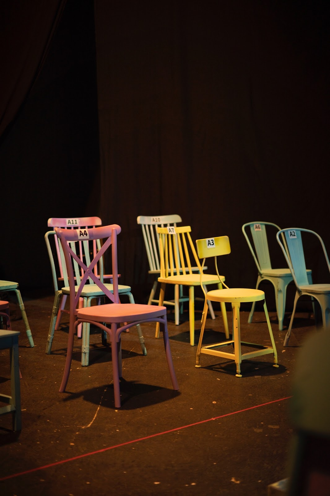
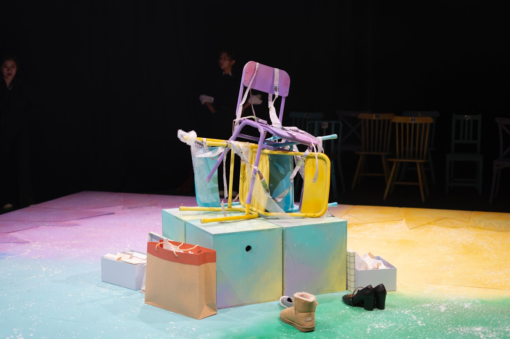
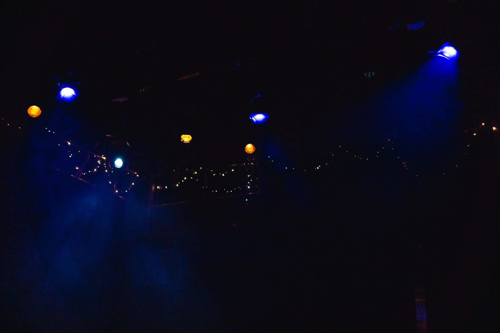

네번째 조각
이런 날은 하늘에 뛰어들고 싶어
깊은 청현빛의 맛
20살 성인이 되면 가장 하고 싶은 건, 술을 먹는 것도 아니고, 클럽에 가서 빵댕이를 흔드는 일도 아니었다. 난 엘파바 트룹이 되고 싶었다.
뮤지컬 위키드에 빠져 있었던 19살의 나는, 교실에 앉아있는 내내 엘파바 생각을 하는 고3이었다. 아무도 인정해 주지 않는 초록색 피부의 마녀. 친구를 위해서라면 앞뒤 가리지 않고 불의에 나설 수 있는 마녀. 동생을 챙기고, 아버지를 보살피는 기구한 운명이지만 언젠가 마법사를 만나면 자신의 꿈을 이해받을 수 있지 않을까 희망을 가진 마녀. 무대 위에서 엘파바를 연기하는 배우를 보고 있으면 나는 정말 그 애가 살아있는 것 처럼 느껴져 심장이 터질 것 같았다. 내가 가진 가장 큰 재능이라면 바로 그건 과몰입이 아닐까. 12살 시절 선덕여왕을 보며 실시간으로 신라시대에 살았던 전적이 있던 난, 이번에도 역시 오즈 마을에 살기 시작했다. 야자 시간에 몰래 이어폰을 끼고 엘파바의 모든 대사와 넘버를 외우기 시작했다. 수학 시간에는 창문 너머를 보며 그 애의 마음을 상상했고, 기숙사 복도에서는 그 애가 되어서 노래를 불렀다. 나는 겨우 키 158의 단신이면서 168~170 거구의 엘파바가 되는 꿈을 꿨다. 세상에 불가능은 없지. 지금이야 비록 어른들이 시키는 대로 가만히 앉아있으라는 말을 듣지만, 내가 어른이 되면 그런 것 쯤은 거뜬히 무시하고 원하는 길로 뚜벅뚜벅 걸을 수 있을 거야. 서사의 옷을 입으면 나에게 불가능이란 없었으니까. 무대는 언제나 엘파바가 가는 길이 열려있었고, 그 속에서 그녀는 자기의 고통도 눈 딱 감고 이겨냈다. 그러니 나도 엘파바가 소리치는 것 처럼 멋지게, 뒤를 걸어오는 친구들한테 이야기 할 수 있을 줄 알았다. “누군가 얘기했어 한 번쯤 날개를 펴라고!”
그때, 이 투마치 과몰입소녀의 걱정거리는 딱 하나였다. 아무도 내 꿈을 응원해 주지 않는 것. 예술이 뭐 다 그렇지만 특히 연극이라는 두 글자에 부모님의 마음이 엄청나게 달아있었다. 그중에서도 일평생 사무직만 해 온 아빠는 더 화가 난 듯했다. 배고픈 직업이야, 언제 어디서 성공할 지 몰라, 다른 것도 아니고 왜 하필 연극이야, 그런 말을 귓등으로도 듣지 않는 내게 아빠는 기어코 욱하며 한 마디를 더 얹었다. “니가 무슨 재능이 있어. 죽어라 공부만 한 놈이.” 아, 가장 세상 밖으로 나오면 안 되는 말이었는데. 그때는 몰랐다. 저 말이 평생 나에게 족쇄가 될 줄은.
그러나 뭐 어떤가. 모두가 자신의 꿈을 인정받으며 살아가는 건 아닐 텐데. 열심히 가다보면, 닿겠지 라는 마음으로 나는 20살 성인이 된 순간부터 달렸다. 달리다보면 무조건 무대 위로 가게 될거야, 라는 믿음 하나로. 아무것도 모르면서 무작정 받아달라고 극단 문들을 두드려 겨우 신생 극단에 한자리를 차지하고 지냈다. 가출, 쓰리잡, 상경과 홀로서기, 5년동안 거리에서 살던 시절은 절대 호락호락하지 않았다. 울면서 돈 벌고, 글 쓰고, 꿈꾸고. 내가 살고 싶은 세상을 꾸준히 찾으며 살기를 오래, 결국 자식 이기는 부모 없다고 기어코 연극영화과 대학 졸업장을 들이밀었을 때 아빠는 날 인정했다. 그래도 최대한 돈이 되는 일을 해, 여전히 아빠다운 말과 함께.
코 끝 시린 겨울, 눈 내리던 날. 그냥 관성으로 살았던 동네라고 생각했는데 이별한다니 하나하나 눈에 밟히는 것들이 많았다. 정들었던 동네 포차 아주머니와 세탁방 이모, 너무 힘든 새벽이면 가게에서 칵테일 한 잔을 말아주던 소믈리에 언니, 일하던 떡볶이집 주방 이모들에게 핸드크림을 쥐여 주니 그들은 눈물을 글썽이며 넌 뭐든 잘 될 거라 말해줬다. 성공하면 우리 꼭 불러줘. 연극 보러 갈게. 자신 있게 대답하면 울 것 같아 멋들어지게 가게에다 싸인을 하고 돌아서는 길에 펑펑 울었다. 오늘만 울고 더 이상 울지 않으리라 생각했다. 그게 제 갈 길을 뚜벅뚜벅 가는 어른이니까. 난 좀 더 단단하고, 그 사람들의 따뜻함을 잊지 않으며 길을 가는 어른이고 싶었다.
동기 오빠 봉고차에 집 안 가득 채우던 책들을 노끈으로 묶고 차에 실으니 그제야 실감 나는 이사. 옷가지와 살림살이보다 더 많은 책을 보더니 친구들은 참 징했다며 한마디씩 얹곤 했다. 그랬나? 그냥 도망갈 곳이 필요했을 뿐인데. 옛날이나 지금이나 난 여전히 내가 살고 싶은 세계를 찾아가는 과몰입 인간이었으니까. 묵은 짐을 한가득 가지고 동네를 벗어나 톨게이트에 들어설 때까지만 해도 해냈다는 묘한 설렘이 있었다. 어른이 되고 나서 가장 먼저 가진 성취였다. 가서도 뭐든 잘 할 거야, 그 말에 의심하지 않고 새로운 동네로 들어섰다. 자취방 앞에 가득 주차되어 있던 이삿짐 차와 사다리차, 새내기 친구들이 이삿짐을 내리길 한창이었다. 그제야 깨달았다. 내가 달려온 길은 꿈으로 향하는 여정이 아니라, 출발선으로 향하는 여정이었다는 것을.
썅, 존나 머네.
#1. 내가 살고 싶은 나라는 어디에

방학도, 휴일도 없이 학교에 모든 스케줄을 맞추고 꼬박 2년을 내리 공연만 올리면서 살던 나는 2학년 1학기가 끝난 여름, 드디어 과부하가 걸렸다. 그도 그럴 것이 13시간 동안 극장에서 하루를 보내길 1년 반, 한 해 동안 참여한 작품만 22개. 활동 한 시간에 비하면 몸과 마음이 늦게 고장이 난 편이긴 했다. 이미 내 동기들은 허리 디스크와 거북목, 수면 부족과 수분, 영양부족을 달고 살았고, 밥은 못 먹어도 손에서 커피는 절대 끊이지 않았다. 내 다크서클도 늘어질 대로 늘어졌지만 한 편으로 마음을 놓고 있었던 건, 나는 아직 한 번도 앰뷸런스에 실려가지 않은 몇 안 되는 사람이기도 했기 때문이었다. 8월 늦게 마지막 프로덕션의 무대를 털고 난 후, 나는 집에 도착하자마자 쓰러졌고, 몇 개월간 못 잔 잠을 몰아서 자느라 일어나지 못했다. 몸이 아파 정신을 차려보니 이틀이 지나 있었다.
하지만 늦게 학교를 들어간 만큼 휴학은 꿈도 꾸지 말라고 했던 아버지의 전언이 있었기도 했고, 딱히 어떤 명함을 내밀 만큼 스스로 뭐가 없어서 아직은 쉴 때가 아니라고 생각도 했기 때문에, 나는 또 나를 들들 볶았다. 대체 난 뭘 하고 싶지? 머리를 굴려야지. 그래야 피티를 하고, 연출을 따내고, 나만 바라보는 동기들과 스탭들도 다음 학기 작품이 정해지지. 부담감이 가득한 채로 어떤 작품을 할 지 고민하는 고통의 시간 2주 째, 내 한글창은 여전히 썼다 지웠다 흔적이 남은 백지상태 그대로였다.
사실 정의하기는 쉬웠다. ‘번 아웃’ 이라는 두 단어가 복잡한 내 상태를 설명하기에 아주 잘 정리된 단어였기 때문이다. 연극을 왜 하고 싶었더라? 내가 되고 싶어 했던 엘파바와, 나디아, 나탈리는 어느샌가 상상 속에서 사라져버렸다. 꿈에 가까워지자 나는 아이러니하게도 가장 먼저 환상으로 도망가는 짓을 하지 않았고, 더 이상 창 밖을 멍하니 쳐다보거나, 오즈의 주민이 되거나, 시도 때도 없이 가슴이 끓어오르는 짓은 하지 않게 되었다. 그 대신 무대에 들어가는 자재나 조명기의 종류, 잘 빠진 연출은 무엇인지, 흠이 없는 연기는 무엇인지, 트집을 잡을만한 연극이었는지 재는 사람이 되었고, 그러다 보니 자꾸만 무언가를 잃어버린 사람처럼 화를 냈다. 아는 건 많아졌고, 신경 쓸 게 늘었으며, 사람들은 내게 프로페셔널하다고 말했지만, 나는 내가 성장할 수록 아주 오랜 친구들을 잃어버린 사람처럼 마음이 공허해졌다.
‘더 이상 살고 싶은 나라가 없어.’
그것을 깨달았을 때, 나는 더 이상 연극을 하고 싶지 않았다. 대체 왜? 내가 만나보지 못 한 연극과 뮤지컬이 수두룩한데. 아직도 OTT 시장에서는 콘컨텐츠들이 미친 듯이 쏟아지고, 매 해 대학로에는 창작 뮤지컬들이 쏟아지며, 난 아직 그 많은 작품들이 살아있는 브로드웨이에도 가본 적이 없는데. 이유를 찾기 시작하면 끝이 없겠으나, 거짓말은 하고 싶지 않았다. 그래, 나도 그런 것쯤은 안다. 좋은 창작자가 되려면 저 쏟아져 나오는 콘컨텐츠들을 섭렵해야 하고, 창작 뮤지컬을 다 보고 트렌드의 최전선에 서야 하며, 좋은 컨셉과, 좋은 이야기를 구별할 줄 알아야 하고, 시대의 흐름도 타면서, 그 사이에서 내 이야기를 빼어나게 선보이는 것. 그러면 사람들이 말하는 성공까지 거뜬히 쥐어낼 수 있는 창작자가 된다.
근데 난 그럴 수 없었다. 그럴 힘도 없고, 하고 싶은 이야기도 없었다. 완벽한 무의 상태. 턱 끝까지 할 말이 차올라 가슴 속으로 꾹꾹 참아버릇하던 19살의 나는 어쩌다가 이렇게 되어버렸을까? 조선소 풍경이 들어찬 교실 창문 하나의 크기로 보는 세상, 엘파바 생각만 해도 행복했던 그 때는 지났다. 이젠 더 이상 창문을 통하지 않고도 세상을 보는 어른이 되어버렸기 때문이다. 스스로의 삶을 건사하는 어른. LH 청년주택 청약을 꼬박꼬박 넣고, 보험료도 내며, 핸드폰비와 월세를 감당하고, 생활비를 벌면서, 죽고 못사는 꿈도 지켜내야 하는 어른. 하고 싶은 일만 하면서 살 수 없음을 배우는 지독한 어른이 되는 과정. 정말 이상하지, 악세사리 가판대에 서서 방판하면서 책을 읽고 분석할 때도 이렇게까지 공허하지는 않았는데. 오히려 힘들려면 그때가 더 힘들었던 것 같은데. 몸에 힘이 하나도 들어가지 않았다. 가장 많이 떠오른 건 고등학교 시절 야자하기 싫어 뛰어내려가던 비탈길이다. 아, 어디든 뛰어들고 싶다. 도망치고 싶다. 이런 욕구를 제어하지 못하는 나는 아직도 어른이 아닌 걸까.
새로운 작품을 내리 보고, 책 10권을 쌓아놓고 읽다가 글자가 나중엔 눈에서 흩어져 담기지 않음을 깨달았을 때, 난 평소와 조금 다르게 미친 짓을 해보고 싶어졌다. 그래 이렇게 살면 안 된다. 마음에 안 들면 찾아가면 된다. 그게 내가 살아온 방식. 그래서 난 쌓아 놨던 책들을 다 치우고, 그때부터 친구들을 모으기 시작했다. 다큐멘터리 연극이라는 게 있대. 그건 어떤 서사 뒤에 숨을 필요도 없고 그냥 우리 이야기를 하는 거래. 그런 말을 듣고 레퍼런스 찾아보기를 여러 번, 지금 나에게 가장 필요한 장르였다. 불행인 걸까 다행인 걸까 동기들도 스스로의 상태를 모두 ‘번 아웃’이라고 소개했으니, 소기의 목적은 맞아 보였다. 우리 연극을 하지 않는 연극을 만들자. 연극을 파업하자. 뜻도 모르고 해치우듯 무대를 만드는 일은 그만하자.
‘그러면 무슨 이야기를 할 건데?’
갑작스레 물어온 친구의 물음에 대답하지 못했다. 하지만 나는 속된 말로 아가리 전공—학교에서 연출 전공을 부르는 은어—이므로 “공연이 끝날 때 우리는 우리가 어떤 이야기를 하는지 알게 될 거야.” 이건 그걸 찾으러 가는 여정이야. 그렇게 말해버렸다. 사실은 내가 제일 하고 싶은 일인데, 마치 무엇이 되는 것 마냥 친구들을 설득했다. 눈 깜짝할 순간에 프로덕션이 만들어졌다. 교수님께도 그렇게 선언했다. 우리는 우리가 하고 싶은 이야기를 할 거예요. 당돌한 말이라 교수님 앞에서 피티를 할 때 내내 마음을 졸였다. ‘그래서 너네가 하고 싶은 이야기는 뭔데?’라고 물어보실까봐. 사실 난 그것에 대한 답은 전혀 모르기 때문이었다. 하지만 이런 내 마음을 읽기라도 한 듯이 교수님은 내 피티를 가만히 들어주시곤, 이것저것 물어보시더니 답을 잘 찾아보라고 말했다. 다음날 우리팀에겐 프로덕션 허가가 떨어졌다. 좋은 작품을 부탁한다는 기획팀의 메시지와 함께.
보편적으로 연극 프로덕션을 시작하면, 프리프로덕션 단계에 들어간다. 작품을 분석하고, 리딩하며 작품에 대한 스스로의 견해를 가지는 시간. 하지만 우리에게는 리딩 할 대본도, 분석할 텍스트도, 아무것도 없었다. 하긴, 삶을 이야기하려고 모여서 서로에 대해서도 몰랐으니 그럴 만도 했다. 존재하는 것은 오직 눈 앞에 있는 서로뿐. 그제야 무에서 유를 창조한다는 ‘다큐멘터리 연극’이라는 말이 온몸으로 와닿았다. 무슨 말을 해야 할지 모를 땐, 우리가 누군지부터 먼저 알아가보자. 두루뭉술하고 가장 어려운 명제에 친구들은 흔쾌히 고개를 끄덕여줬다.
말은 시원스럽게 했지만 속은 항상 바짝바짝 타들어갔다. 연습 첫 날, 친구들은 무슨 말 부터 해야 할 지 몰라 자신이 아는 것들을 모두 쏟아내기 시작했고, 혼미해진 난 내 옆에 앉은 드라마투르그 혜환(가명)언니의 손을 꼭 잡았다. 언니, 무슨 일이 있어도 나랑 이 지옥을 같이 걸어 가 줄 거지? 나의 그런 어두운 속내도 모른 채 언니는 저녁에 뭘 먹을지 열심히 고르고 있었다. 그리고 그게 언니가 웃는 마지막 모습이었다.
#2. 지나고 나면 다 마음에 남는 것.

다큐멘터리 연극은 내가 꺼낼 수 있는 모든 걸 꺼내야 하는 장르였다.
프로덕션 준비 기간은 3개월 남짓이었는데, 우리는 2개월 동안 한 번도 해 보지 않은 일들을 하기 시작했다. 할머니의 더덕무침 레시피를 실현시키기 위해 집에서 더덕을 깎는다거나, 한 번도 한식 양념을 해 본 적이 없는데 고추장에서 풋내가 나 식초를 들이부었다던가 하는 그런 일들. 집 앞에서 무작정 아무 버스나 잡아타서 종점까지 가 보는 일. 평소라면 굳이 시간을 들여서 하지 않을 일들. 처음에는 부질없으면 어떡하지 그런 생각이 들었다. 빨래 개는 것도 힘들어 하는 내가 종점까지 버스를 타고 간다고? 시간만 버리는 건 아닌지. (실제로 별 감흥 없이 노래만 36곡을 넘게 들었다.) 나를 믿고 와 준 친구들이 매 순간 실망하는 건 아닌지. 연습실에 들어갈 때마다 나와 혜환 언니는 친구들의 말 속에서 더 나은 의미를 도출해 내기 위해 항상 초예민상태로 앉아있었다.
이 작업은 생각한 것 보다 훨씬 더 지리멸렬하고 아팠다. 처음엔 자기 상처와 마주 보는 시간이 굉장히 길었고, 그 가운데에서 말과 상념이 아니라 눈으로 보이는 씬으로 만들어야 했기 때문에 오는 거부감도 있었다. 더군다나 우리가 만든 씬은 언제나 같이 수업을 듣는 학우들과 교수님 앞에서 매주 발표를 했어야 하므로, 친구들은 자신의 삶을 피드백 받는 거나 다름 없는 느낌을 받았다. 무엇보다 총괄적으로 내가 친구들이 가져온 삶의 이야기에 피드백을 해야 했다. 이건 메시세지가 부족한데, 이건 서사가 되기에 중요하지 않은 이야기인데. 그런 판단할 자격이 없었음에도 연출이라는 이유만으로.
지치고, 힘든 날의 반복이었다. 혜환언니는 면역력이 떨어지면서 아토피가 심해졌고, 친구들은 체력이 부치니까 신체 템포가 느려지기 시작했다. 이 모든 것들을 목격하며 난 처음 가졌던 포부와는 점점 멀어지는 것을 느끼고는 두려워졌다. 대체 왜 이 작업을 시작했는지 회의하며, 차라리 상처 같은 건 덮어두고 어떻게든 감도를 끌어올려 과몰입이나 잘 되는 서사를 찾았어야 했나 고민했다. 잠깐 눈을 붙이려고 침대에 누워도 머릿속에서 친구들의 이야기가 나가지 않아 괴로웠다. 내일 이 이야기를 해 줘야 하는데, 누구한테는 저 씬을 물려줘야 하는데. 누구는 더 이상 울지 않도록 힘을 줘야 하는데. 그렇게 생각이 꼬리를 물면 아침이 되었다. 그러면 꼭 마지막엔 아빠의 목소리가 들렸다. “니가 무슨 재능이 있어, 죽어라 공부만 한 놈이” 아니야, 씨발 할 수 있어. 난 마지막엔 결국 해냈었다고. 머릿 속 꺼지지 않는 스위치를 붙들며, 부정해가며, 잠이 들기 직전까지 스스로를 미워했다. 그러다 보면 이 죄책감 같은 기분에서 조금이라도 벗어날 수 있을 것 같았다.
그러나 엔진이 고장 난 폭주기관차 같은 나를 멈추게 해 준 건 다름 아닌 혜환언니였다. 연습이 끝나던 새벽 2시 반이면 우리 집에 돌아와서 3시부터 기숙사 문이 열리는 6시까지 친구들의 이야기 디벨롭을 하는 것이 혜환언니와 나의 데일리 루틴이었다. 하루에 2시간씩 자면서 수업과 연습을 병행하려니 제정신으로 걸어 다닌 적이 손에 꼽는 것 같았다. 그 날도 피곤한 몸을 이끌고 포스트잇을 잔뜩 사서 우리집 벽에다가 배우 4명의 섹션을 만들고 하나하나 정보를 붙여나가고 있었다. 그러다 내가 울었다. “언니, 나 너무 힘든 것 같아.” 이거 왜 시작했을까. 난 여전히 내가 누군지도 모르겠고, 뭐 하는 사람인지도, 어디에 서 있는 지도 모르겠는데. 한 껏 투정 부리는 내게 혜환언니는 그렇게 말했다. “너는 꼭 다시 글을 쓸 수 있을 거야. 두려움과 무서움을 걷어내면 여전히 서사를 좋아하는 너가 서 있어. 너도 모르는 사이에 그 마음을 다시 알고 싶어서 이걸 시작한 게 아닐까 .” 우린 여전히 쓰는 사람들이고, 네 이야기는 재밌어. 넌 여전히 작가고, 난 네 독자야.
그제야 아주 오랜만에 긴장과 잘 해야겠다는 마음으로부터 벗어날 수 있었다. 학교에 들어오면서 다시는 쳐다보지 않겠다던 펜도, 과몰입 할 세상이 없다며 투정 부렸던 것도. 여전히 너무 잘 하고 싶어서 스스로를 깎고 있었던 거라고. 혜환언니는 나에게 다시 펜을 쥐어줬다. 니 이야기를 쓰다보면 살고 싶은 세계가 생각이 날 거라면서. 나는 그제서야 내 친구들을 본인 그 자체로 다시 볼 수 있었다. 친구들의 세계를 함께 만들어주는 것은 내가 살고 싶은 세계를 찾는 과정이 되어갔다. 언니와 나는 무대 위에 올라가지 않는 사람들이지만 친구들의 이야기 사이에 숨어있는 우리들의 모습을 발견하면 포기하고 싶다가도 어느새 애틋해졌다. 그때가 돼서야 나는 단순히 원하는 길을 향해 무작정 걸어가는 것이 어른이 아니라는 것을 알았다.
죽으라는 법은 없다고, 2개월이 지난 어느 날, 친구들의 오브젝트가 잡히기 시작하면서, 연습실의 흐름이 조금씩 달라졌다. 한 평생 뒤로 하던 토슈즈를 꺼내 신기 시작한 배우 C, 한 번도 생각 해 본 적 없던 호주로의 유학 생활을 상기 시킨 배우 J, 내내 어디론가 달리고 싶던 마음을 꺼내기 시작한 배우 H, 내 삶이 순환소수 같다는 생각을 해 본 배우 Y. 친구들은 더 이상 상처가 아니라 그 너머에 초점을 맞추기 시작했다.
이야기들은 매 순간 부딪히고 깎이면서 성장하곤 했다. 아무것도 모르겠다던 배우 Y가 본인 대본을 완성하고 동선을 밟던 어느 날, 혜환언니는 기분이 이상하다며 잠깐 울었다. 남에겐 절대 정 주지 말아야지 라고 다짐했던 게 무색하도록 우리는 어느새 함께 성장하고 있었다. 연습이 끝난 밤이면 우리는 꼭 밤하늘을 보며 내려왔다. 워낙 별을 좋아했던 난 언니와 친구들에게 북두칠성과 별자리를 가르쳐 줬다. 아주아주 오래 반짝이는 별들을 보면서 우리도 언젠간 빛날 수 있으리라 생각해 봤다. 지금보다도 더 어렸을 때, 그때도 어른인 줄 알았는데. 가장 맡언니인 배우 H가 한 참 동안 별을 바라보다 말했다. “난 아직도 애인 것 같아. 별 보고 이런 사소한 게 아직 좋은 거 보면.” 언제쯤 클 수 있을까? “아마 영원히 어른이 되지 못할 수도?” 배우 C가 말했다. 꿈꾸는 사람은 영원히 어른일 수 없다잖아. 참 어려운 문제다. “그래도 다른 걸 다 떠나서 나중에 돌이켜보면 지금이 생각날 것 같아.” 배우 J가 그렇게 말해줬다. 그 이후로는 시간이 정말 빠르게 지나갔다. 중간에 정말 자기 이야기를 찾은 것 같다며 C가 갈아엎은 대본 최종고를 건네면서 11월 7일, 2개월 하고도 2주가 걸렸던 기나긴 대본 작업이 끝이 났다. 연습실을 나오는 그 순간, 이름 모를 해방감을 느꼈다. 그건 내가 어른이 되고 처음 얻은 성취의 그 이상이었다. 혜환언니와 난 오랜만에 5시간을 넘게 잤다.
#3. 우리는 넓은 하늘과 무한한 별을 가졌으니까

그럼에도 불구하고, 다시 일어나야 해?
공연을 한 주 앞두고, 친구들은 내게 저 질문을 해 왔다. 이 연극이 내 마지막 연극이 될 수도 있어. 배우 J는 자신 있게 그런 말을 하기도 했다. 이렇게 힘들었잖아. 연극을 너무 하고 싶었지만 사실은 더 이상 하고 싶지 않기도 하잖아. 세 달에 100도 안 되는 돈 받으면서 배 곯으면서 살고 싶지 않잖아. 힘들면 그냥 힘들기만 하지 왜 항상 극복하고 일어나는 소년만화 같은 성장을 해야 하냐고. 누군가는 그 자리에서 울었고, 누군가는 그 말에 반기를 들었으며, 누군가는 공감했고, 누군가는 침묵했다. 아무도 그 질문에 대해서 답을 내리지 못했다.
하지만 아이러니하게도 그 질문의 답은 공연이 끝난 후에 모두 스스로 깨달았으리라고 생각한다.
우리가 매일 보고 내려왔던 수 많은 별들을 공연장에 옮겨달라는 부탁에 조명 디자이너 동기는 흔쾌히 알전구로 극장을 가득 채워주었다. 우리의 연극은 클라이맥스를 향해 갈 수록 무대 한 가운데에 구조물이 쌓이는 형식을 가지고 있었는데, 그 구조물들은 다 우리의 삶의 한 조각에서 나온 것들이다. 배우 J가 호주에 갈 때 한 아름 들고 가던 기대 같은 포장된 선물들, 배우 C가 신었던 무수히 많은 신발들과 토슈즈들, 배우 Y가 엄청나게 많이 풀었던 수학 문제집들, 배우 H가 찍어내야 했던 수많은 서류 파일들, 그리고 우리가 앉아야만 했던 많은 의자들과, 매 순간 올라가야 했던 삶의 무대들. 배우들은 그 구조물들에 둘러앉아 하늘에 수놓인 별들을 본다. 우리가 매일 밤 그래왔던 것 처럼. 아무 대사도 없고 노래와 별로만 무대를 다 채우고 있는데 혜환언니와 나는 그 광경을 보며 펑펑 울었다. 친구들도 그 순간 눈물을 쏟았다. 아마 같은 감정을 느껴서인 듯 했다. 우리가 그토록 답을 내지 못했던 계속 해야겠다는 그 감정을. 머리에 파노라마처럼 지난 3개월이 스쳤다. 더덕무침, 버스 정류장, 렌터카로 달리던 한강 도로, 다 함께 보던 개기월식, 환승연애, 함께 흘리던 눈물, 그리고 수많은 별들. 돈보다 더 큰 가치는 그런 곳에 숨어있었고, 나는 공연이 끝난 후 족쇄 같던 아빠의 말을 벗어던졌다. 우리 공연 제목처럼 오랜만에 가슴이 뜨거워졌다. ‘이런 날은 하늘에’ 뛰어들고 싶을 만큼.
살아오면서 어른이라는 두 글자에 항상 무게감을 가지곤 했다. 그 무게감의 80프로는 잘 살아야 한다는 부담감이었다. 감당해야 할 것들을 생각하느라 살고 싶은 세계를 잊어버렸던 그 순간, 이런 게 어른이라면 영영 어른이 되고 싶지 않았던 것 같다. 하지만 이제는 그게 다가 아님을 안다. 아직까지 정확히 어떤 것이 어른인지 명명할 수는 없어도, 지나온 모든 것에 가치가 있다는 것을 아니까. 그것들을 간직할 수 있으면 된다. 그리고 겁 없이 또 다음을 도전해 보는 것이다. 그게 내가 바라는 어른의 상이다.
왜냐하면 누군가는 날 우주만큼 사랑하고, 우리는 넓은 하늘과 무한한 별을 가졌으니까.